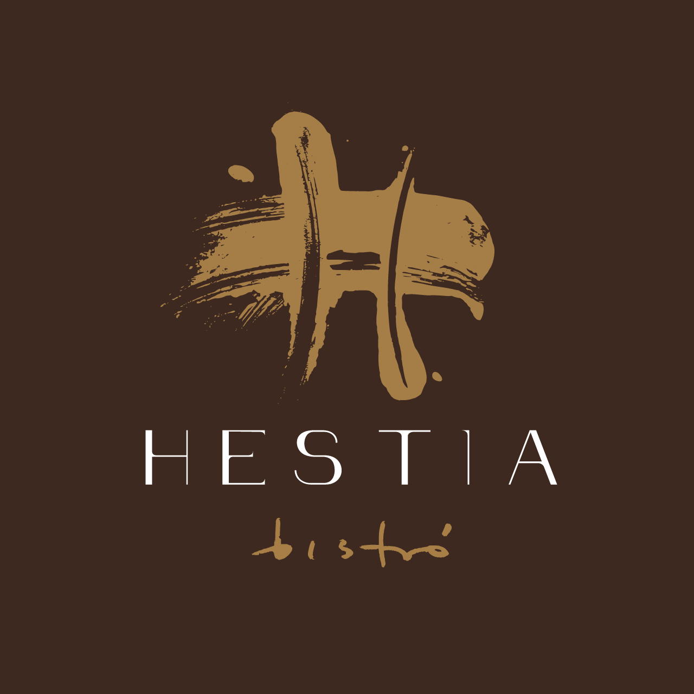

Hestia toma su nombre de la diosa griega del hogar y la hospitalidad. El nombre no es decorativo: es el posicionamiento. Un bistró que se vive como una casa — íntimo, cercano, sin postureo — pero con la cocina al nivel de cualquier mesa con estrella.
Cocina creativa para compartir. Carta diseñada para que la gente pruebe, combine y se atreva. Siempre hay algún ingrediente reconocible: el atrevimiento empieza desde la comodidad.
El restauranteAnoia. A cuarenta minutos de Barcelona, lejos de la coreografía de la ciudad. Aquí la mesa larga es costumbre, el vermut es ritual y el producto de proximidad no es una etiqueta: es el día a día.
Hestia se asienta en este territorio para devolverle algo a la comarca: una cocina de autor que no obliga a salir de casa, que habla en catalán y que recibe sin pedir traje.
El territorio— El chef
Formado en mesas con estrella, cocina en Hestia con la mentalidad del artista que prefiere contar. Camisa de lino, sin delantal: la proximidad es parte del concepto.
Cada plato parte de un ingrediente reconocible — pan, tomate, aceite — y termina en un lugar inesperado. La técnica está al servicio del producto, nunca al revés.
Bio del chef— Equipo de sala
Cuarenta cubiertos. Tablas cercanas. Equipo que conoce la carta al detalle y la cuenta sin libreto. Aquí no se recita: se conversa.
Carta de vinos pensada para acompañar — no para impresionar. Referencias del Penedès, de la Conca, del DO Anoia, y unas pocas sorpresas para quien quiera salir del mapa.
Sobre la salaCarta para compartir. Producto de temporada, técnica al servicio del sabor y siempre algún guiño a lo de siempre — pero no del todo.
Recibimos de jueves a domingo. Sala para cuarenta.
Te recomendamos reservar con antelación.